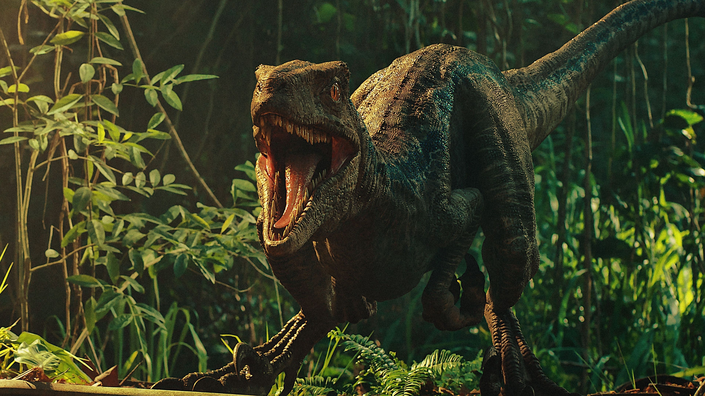

Eoraptor lunensis ("ladrón del amanecer del Valle de la Luna") es la única especie conocida del género extinto Eoraptor de dinosaurio saurisquio sauropodomorfo que vivió a finales del período Triásico, hace aproximadamente entre 231 y 228 millones de años,en el Carniense, en lo que hoy es Sudamérica.
Eoraptor fue un carnívoro pequeño. Sus dientes y garras filosas demuestran un estilo de vida activo. Probablemente se alimentaba de reptiles, mamíferos pequeños e insectos. Sin embargo tenía una dentición heterodonta con dientes adaptados para comer carne y otros similares a los de los herbívoros, por lo que se ha sugerido que fuera omnívoro y que esta estrategia de alimentación había evolucionado desde el principio en los dinosaurios. Tiene un amplio contacto entre los huesos del techo del cráneo por delante de los ojos, como en los prosaurópodos. Hay solamente tres vértebras en el sacro. La cresta deltopectoral corre hacia abajo por el eje del húmero, el fémur se modifica para la postura completamente erguida, y hay varios caracteres dinosaurianos en el tobillo, incluyendo un proceso ascendente en el astrágalo.
Eoraptor lunensis fue descubierto en 1991 por Ricardo Martínez, miembro del equipo de investigación de una campaña paleontológica organizada por la Universidad de Chicago y el Museo de Ciencias Naturales de San Juan en el Valle de la Luna, ubicado en la cuenca de Ischigualasto. Hace 220 millones de años, el Valle de la Luna era un lugar con frondosos árboles, cubierto de vegetación y atravesado por numerosos ríos, algo extraño para un ambiente Triásico, que comúnmente era desértico y árido.